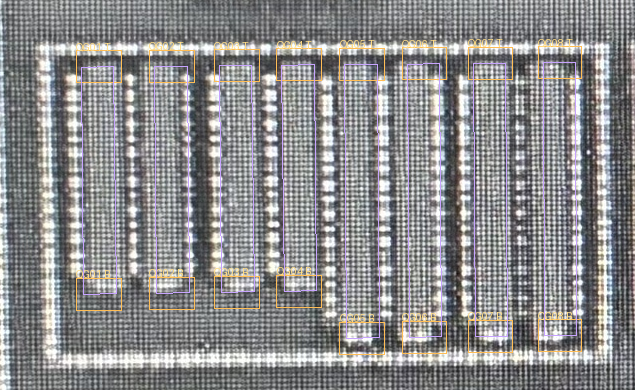
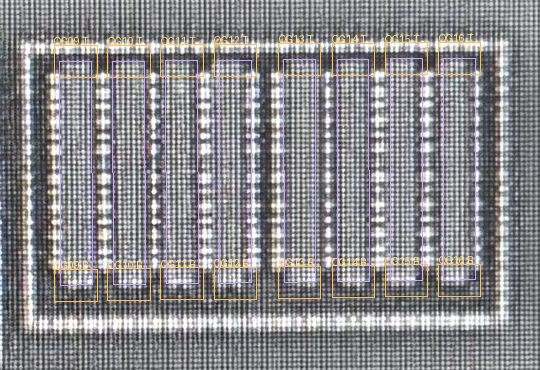
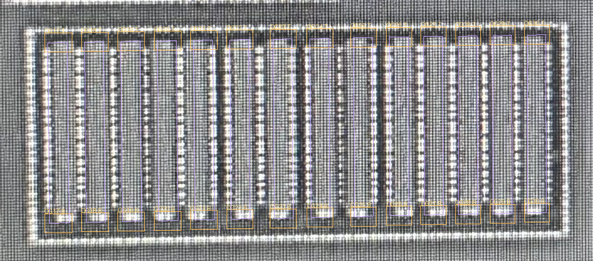

人审已确认：A/B下端短亮条包含栅CT；A/B/C全部从下端引出。 孔数、精确位置与共栅关系尚未确认。裁决原话。以下图稿保留原检查版本。
紫线是原有POLY派生定位，橙框为上下端搜索范围；可切换的蓝色十字仅表示紧凑光学峰， 不是已识别CT。宽松亮峰中混有拍屏网格和材料亮边，完整记录留在台账，不当作孔。 侧向观察收在逐栅台账。原1825个CT、AA/POLY模型不改。
候选M1配准未通过精确端口投影质量门，仅用于对照区域走线；不会据此生成接触孔或连接。 M1原图有独立坐标，切换不能当作像素级对齐。双击图像可放大。
请集中判断：A／B下端的亮短条是否包含栅CT，还是仅材料边缘？C的上端/下端何处是实际栅引出？ 目前不将任何一组栅判为共栅或独立栅。
独立源漏列横向误差：中位3px，最大8px。精确栅CT投影：未通过；纵向未独立验收。

独立源漏列横向误差：中位2.5px，最大9px。精确栅CT投影：未通过；纵向未独立验收。

独立源漏列横向误差：中位5.5px，最大12px。精确栅CT投影：未通过；纵向未独立验收。

| 图中编号 | 稳定ID | 区域 | 上端峰 | 下端峰 | 侧向峰 | 状态 |
|---|---|---|---|---|---|---|
| QG01 | CL2-Q2-A1-01 | A | 14 | 8 | 28 | CT归属未知 |
| QG02 | CL2-Q2-A1-02 | A | 13 | 8 | 29 | CT归属未知 |
| QG03 | CL2-Q2-A2-01 | A | 14 | 7 | 23 | CT归属未知 |
| QG04 | CL2-Q2-A2-02 | A | 15 | 7 | 48 | CT归属未知 |
| QG05 | CL2-Q2-A2-03 | A | 10 | 13 | 39 | CT归属未知 |
| QG06 | CL2-Q2-A2-04 | A | 10 | 16 | 30 | CT归属未知 |
| QG07 | CL2-Q2-A3-01 | A | 14 | 14 | 59 | CT归属未知 |
| QG08 | CL2-Q2-A3-02 | A | 12 | 9 | 43 | CT归属未知 |
| QG09 | CL2-Q2-B1-01 | B | 17 | 9 | 32 | CT归属未知 |
| QG10 | CL2-Q2-B1-02 | B | 17 | 12 | 38 | CT归属未知 |
| QG11 | CL2-Q2-B1-03 | B | 20 | 13 | 39 | CT归属未知 |
| QG12 | CL2-Q2-B1-04 | B | 21 | 15 | 29 | CT归属未知 |
| QG13 | CL2-Q2-B2-01 | B | 21 | 15 | 39 | CT归属未知 |
| QG14 | CL2-Q2-B2-02 | B | 18 | 16 | 41 | CT归属未知 |
| QG15 | CL2-Q2-B2-03 | B | 22 | 14 | 21 | CT归属未知 |
| QG16 | CL2-Q2-B2-04 | B | 19 | 12 | 16 | CT归属未知 |
| QG17 | CL2-Q2-C0-01 | C | 22 | 5 | 31 | CT归属未知 |
| QG18 | CL2-Q2-C0-02 | C | 18 | 6 | 66 | CT归属未知 |
| QG19 | CL2-Q2-C0-03 | C | 16 | 9 | 58 | CT归属未知 |
| QG20 | CL2-Q2-C0-04 | C | 17 | 7 | 72 | CT归属未知 |
| QG21 | CL2-Q2-C0-05 | C | 14 | 5 | 69 | CT归属未知 |
| QG22 | CL2-Q2-C1-01 | C | 16 | 7 | 36 | CT归属未知 |
| QG23 | CL2-Q2-C1-02 | C | 8 | 8 | 26 | CT归属未知 |
| QG24 | CL2-Q2-C2-01 | C | 13 | 7 | 44 | CT归属未知 |
| QG25 | CL2-Q2-C2-02 | C | 10 | 6 | 55 | CT归属未知 |
| QG26 | CL2-Q2-C3-01 | C | 16 | 7 | 29 | CT归属未知 |
| QG27 | CL2-Q2-C3-02 | C | 12 | 5 | 55 | CT归属未知 |
| QG28 | CL2-Q2-C3-03 | C | 17 | 9 | 57 | CT归属未知 |
| QG29 | CL2-Q2-C3-04 | C | 13 | 10 | 50 | CT归属未知 |
| QG30 | CL2-Q2-C3-05 | C | 16 | 16 | 0 | CT归属未知 |